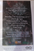

After several months of planning and research, with a series of meetings between me and my team, with the staff of Gloucestershire College and Sandling Fireworks, we agreed to the date of 11th of November 2013. To promote the event we got the College magazine interested in the event, where we as a team co-wrote an article, that was then published a couple of weeks before the event. To further promote it, and draw people to the event, we designed posters both big and small and strategically placed them around the college. The event went off with a bang, and was a huge success.
